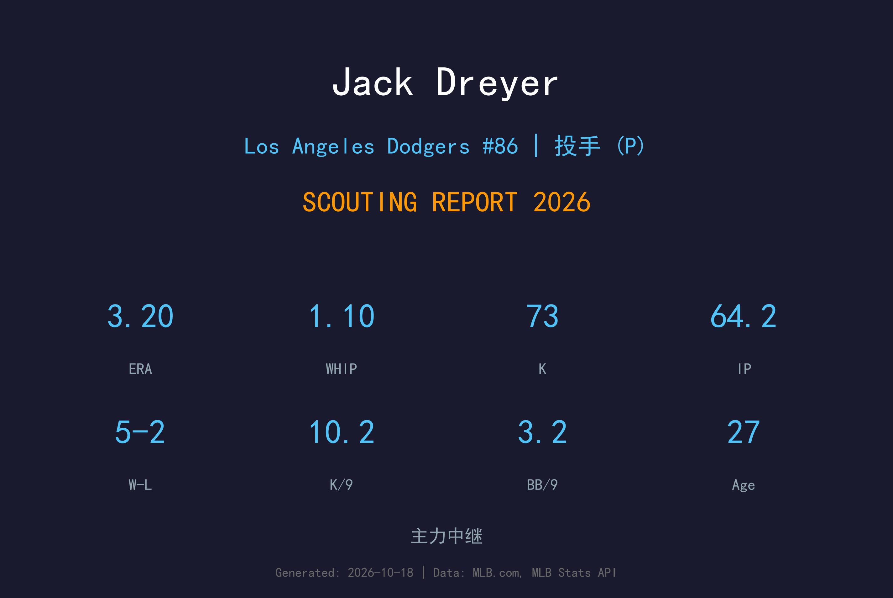
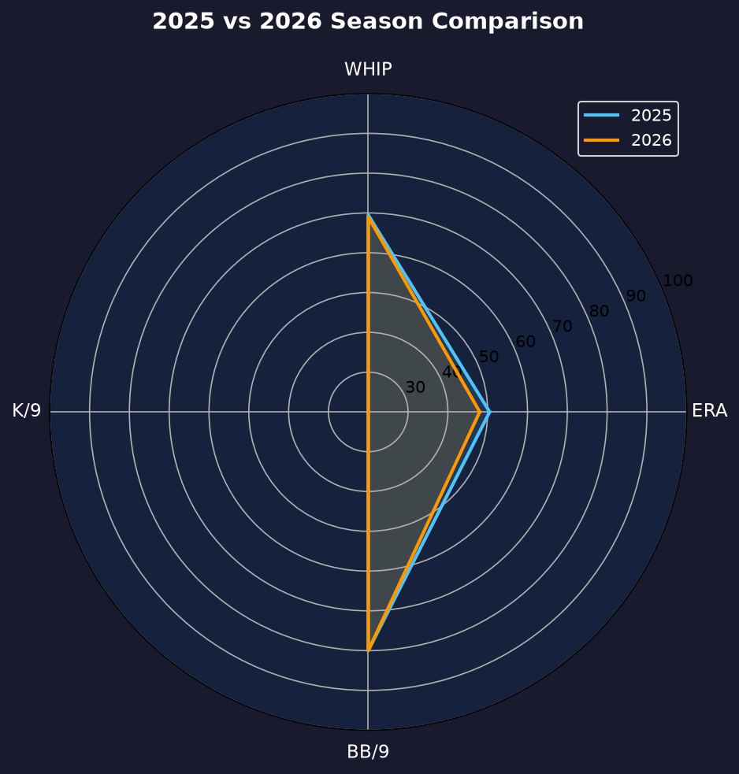
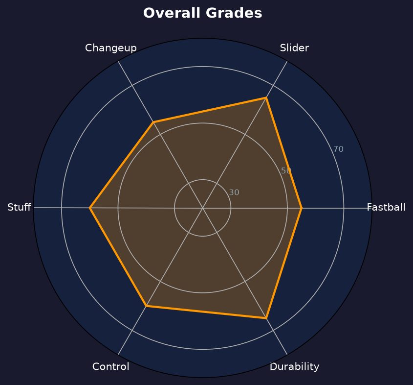

Los Angeles Dodgers #57 | 后援投手（左投） | 左投 / 左打 | 斯坦福牛棚新星

Jack Dreyer 是道奇农场培养模式的典范——大学先发出身、后援化改造、靠控球与球种搭配在大联盟抢下位置。2026年他连续两年出赛 67 场，成为道奇牛棚里使用率最高的左投之一。
2026年他缴出5胜2败、3.20 ERA、1.10 WHIP、64.2局73次三振的成绩单，11 次 hold、2 次救援成功。K/BB 比 3.17 与 .206 被打击率显示他的压制力稳定，唯 inherited runners 处理（43 中 16 得分，37%）比 2025 年（20 中 3）明显退步，是他需要修正的课题。
27岁的 Dreyer 正处于中继的黄金年龄。他不是火球男，但精准与球质让他成为道奇王朝牛棚中不可取代的一块拼图——2027年他的目标是成为第八局的固定人选。
Stanford 大学先发投手出身，Pac-12 联盟评价优秀的左投，选秀后从低阶1A起步。
以开季牛棚身份直接登上大联盟，菜鸟年出赛38场、4.33 ERA，展现控球底子。
67 场、3.20 ERA、K/9 升至 10.16，成为道奇使用率最高的后援之一。

| 赛季 | G | GS | W-L | ERA | IP | SO | BB | WHIP | HR/9 |
|---|---|---|---|---|---|---|---|---|---|
| 2025 | 67 | 5 | 3-2 | 2.95 | 76.1 | 74 | 24 | 1.05 | 0.47 |
| 2026 | 67 | 3 | 5-2 | 3.20 | 64.2 | 73 | 23 | 1.10 | 0.97 |
连续两年 67 场出赛，使用率全队顶级；2026 年局数减少但三振率升至 10.16，压制力升级。
主战球种，占全部配球的 47.6%，均速 94.0 mph。直上直下的四缝线速球，负责抢好球数与建立球数领先，是所有配球的基准。
主战球种，占全部配球的 36.0%，均速 88.6 mph。传统滑球横向位移锐利，是两好球后的主要挥空武器。
常用武器，占全部配球的 16.4%，均速 80.8 mph。曲球落差大，用于改变打者视线高度与击球节奏。
连续两年 67 场出赛不是运气——教练团对他的信任建立在"随时可上场、上场就有效"的基础上。.206 被打击率与 1.10 WHIP 在高使用频率下依然稳定，这是精英中继的标志。
2025 年 20 个 inherited runners 仅 3 得分（15%），2026 年 43 个中 16 得分（37%）——这个数字的翻倍是他 ERA 从 2.95 升至 3.20 的主因。部分源于他常在垒上满员时登场，但改进 first-pitch strikes 与打者报告利用是他 offseason 的功课。
Dreyer 的2026年是"沉默的支柱"式赛季——没有高光时刻，但 67 场出赛中的每一次都稳定输出。他是道奇牛棚里最不显眼但最不可或缺的拼图之一。

高使用率稳定中继，牛棚的沉默支柱
B+ 级 / 主力级中继
Jack Dreyer 的2027赛季目标是成为道奇第八局的固定 setup man。他的耐久度与稳定性已经得到验证，接下来就是提高 inherited runners 的处理效率，向 elite 中继迈进。
2026：67 场 3.20 ERA、11 hold，连续两年全勤级出赛
2027：目标 65+ 场、ERA ≤3.00、inherited runners 失分率 ≤25%
2028+：若滑球持续进化，可竞争终结者或高薪 setup 角色
Jack Dreyer 出生于加州 Palo Alto，成长于湾区浓厚的棒球氛围。高中就读于加州知名棒球强校，随后进入 Stanford 大学效力棒球队。在大学时期，他以先发投手身份展现稳定控球与高于平均的三振能力，是 Pac-12 联盟中评价不错的左投。
2021 年 MLB 选秀第 5 轮被洛杉矶道奇选中，从低阶1A Rancho Cucamonga 起步，初期以先发为主。2023 年在高阶1A Great Lakes 与 2A Tulsa 累积经验，2024 年球团决定将他转为全职后援——这个决定改变了他的生涯轨迹：三振率与控球同时提升，他迅速成为农场后援新星。
2025 年 3 月 19 日，Dreyer 完成 MLB 首秀，直接以开季牛棚身份进入大联盟。菜鸟年 38 场、4.33 ERA 不算亮眼，但控球的底子清晰可见。2026 年他全面进化，成为道奇使用率最高的后援之一。场外的 Dreyer 以低调与勤奋著称，代表了道奇近年农场培养的成功模式——大学先发出身、后援化改造、靠精准与球质在大联盟抢下位置。